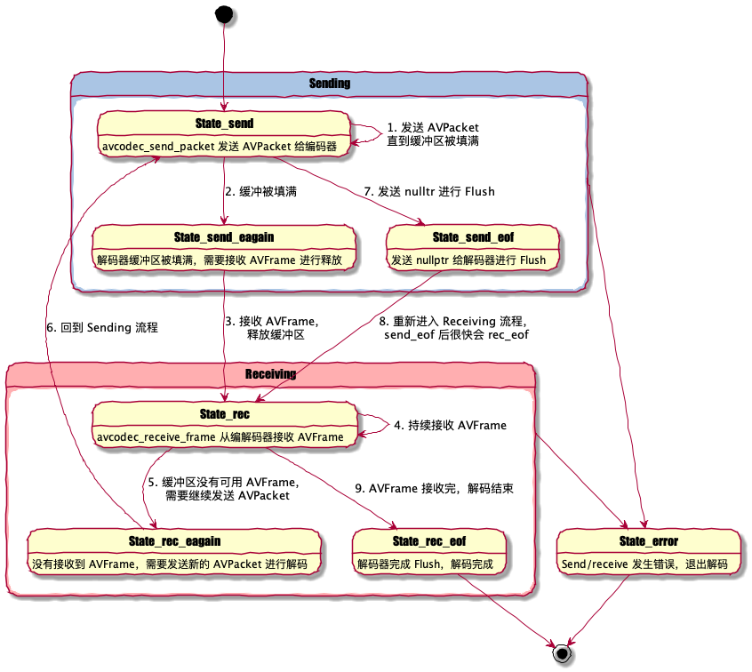

【DangerFFmpeg】第一节、屏幕截图
本文是 《DangerFFmpeg》系列教程第一节，系列完整目录： 《开篇》 《第一节、屏幕截图》 《第二节、输出到屏幕》 《第三节、播放声音》 《第四节、多线程》 《第五节、视频同步》 《第六节、同步音频》 《第七节、快进快退》 《结语》
系列所有代码托管在 GitHub 。
概述
视频文件有一些基本构成成分。首先，视频文件本身叫做 容器（container），容器的类型决定信息在文件中如何存储。AVI 和 Quicktime 就是容器的两个例子。然后，你会遇到一组 流（stream），举例来说，视频文件通常会有 音频流 和 视频流（ 流 描述了 “一组按时间先后排列的数据（data element）”）。流中的数据称作 帧（frame）（帧一般会被编码成一个个包，包解开后才是帧）。每个流都是事先使用各种 编解码器（codec） 编码好的。编码器定义了原始数据是何如 编码（COded） 和 解码（DECoed） 的，所以组合起来就叫做 编码器（CODEC） 了。DivX 和 MP3 就是编解码器的两个例子。包（Packet） 紧接着从流中被读取出来。包是可以包含（有的包可能不会携带原始数据）能够被解码原始数据帧的数据块，拿到数据帧后我们就可以根据需要对其进行修改了。对于我们来说，每个包都包含完整的数据帧，音频则是多个数据帧。
对于简单的需求，处理视频和音频的流程非常简单：
OPEN video_stream FROM video.avi
READ packet FROM video_stream INTO frame
IF frame NOT COMPLETE GOTO 20
DO SOMETHING WITH frame
GOTO 2
使用 FFmpeg 处理多媒体文件就和上面的流程差不多，不过一些大型项目的 DO SOMETHING 步骤可能会非常复杂。在本节教程中，我们将打开视频文件并从中读取视频流，然后在 DO SOMETHING 步骤中将帧数据写入 PPM 文件。
PPM 文件是啥？ PPM 是 Portable PixMap 的缩写，是一种用文本格式紧密存储的 24-bit RGB 图像。后面在写 PPM 文件时还会再提到。
打开文件
首先，看下如何打开一个文件。使用 FFmpeg 前，你必须对其进行初始化。
#include <libavcodec/avcodec.h>
#include <libavformat/avformat.h>
#include <libswscale/swscale.h>
int tutorial01::main(int argc, char const* argv[]) {
av_register_all();
return 0;
}
这段代码注册 FFmpeg 中所有可用的文件和编解码器，后面打开对应格式文件时可以自动使用这些编解码器了。你只需要调用 av_register_all 一次，所以上面代码在 main 里调用。如果你不想注册所有的格式和编解码器，也可以单独注册指定的文件格式和编解码器，不过这通常没必要。
在 FFmpeg 4.0 被标记为 deprecated，文件格式和编解码器会自动地进行注册。av_register_all
现在我们可以真正地去打开文件了：
AVFormatContext *pFormatCtx = nullptr;
// Open video file
if (avformat_open_input(&pFormatCtx, argv[1], nullptr, nullptr) != 0) {
return -1; // Couldn't open file'
}
我们从第一个输入参数从获取文件名。 avformat_open_input 读取文件头并且将读取到的信息存储在 pFormatCtx 中。最后两个参数分别用来指定文件格式，和格式（解封装）参数，这里都传了 nullptr，libavformat 会自动检测这些参数值。
因为 avformat_open_input 只读取文件头信息，所以接下来我们还要确认文件中的流信息：
// Retrive stream information
if (avformat_find_stream_info(pFormatCtx, nullptr) < 0) {
return -1; // Couldn't find stream information
}
avformat_open_input 将读取的信息填充到 pFormatCtx->streams。这里介绍一个非常方便的调试函数，将文件中的信息输出到终端：
// Dump information about the file onto standard error
av_dump_format(pFormatCtx, 0, argv[1], 0);
pFormatCtx->streams 只是一个指针数组，大小是 pFormatCtx->nb_streams，我们将遍历这个数组并找到视频流：
AVCodecContext *pCodecCtxOrig = nullptr, *pCodecCtx = nullptr;
// Find the first video stream
unsigned int videoStream = -1;
for (unsigned i = 0; i < pFormatCtx->nb_streams; i++) {
if (pFormatCtx->streams[i]->codec->codec_type == AVMEDIA_TYPE_VIDEO) {
videoStream = i;
break;
}
}
if (videoStream == -1) {
return -1; // Didn't find a video stream
}
// Get a pointer to the code context for the video stream
pCodecCtxOrig = pFormatCtx->streams[videoStream]->codec;
pFormatCtx->streams 与编解码器（codec）相关的信息叫做 “编解码器上下文（codec context）”，上下文里包含了对应 stream 所使用编解码器的所有信息、参数等，而现在我们拿到了上下文的指针。不过我们还是需要根据上下文找到实际的编解码器实现并打开：
AVCodec* pCodec = nullptr;
// Find the decoder for the video stream
pCodec = avcodec_find_decoder(pCodecCtxOrig->codec_id);
if (pCodec == nullptr) {
spdlog::error("Unsupported codec!");
return -1; // Codec not found
}
// Copy context parameters
pCodecCtx = avcodec_alloc_context3(pCodec);
AVCodecParameters* pParams = avcodec_parameters_alloc();
avcodec_parameters_from_context(pParams, pCodecCtxOrig);
if (avcodec_parameters_to_context(pCodecCtx, pParams) < 0) {
avcodec_parameters_free(&pParams);
spdlog::error("Couldn't copy codec contxt!");
return -1; // Error copying codec context
}
avcodec_parameters_free(&pParams);
// Open codec
if (avcodec_open2(pCodecCtx, pCodec, nullptr) < 0) {
return -1; // Couldn't open codec'
}
注意我们不能直接使用 stream 里的 AVCodecContext，需要使用 avcodec_parameters_to_context 将 stream 中编解码器参数拷贝到新的 pCodecCtx 中。
原文使用
实现参数拷贝，但在新版 FFmpeg 中已经被标记为 deprecated。avcodec_copy_context
暂存数据
现在还需要有个地方存 帧数据（frames）：
// Allocate video frame
AVFrame* pFrame = av_frame_alloc();
因为我们打算输出 PPM 文件，所以还需要把 FFmpeg 解码出来的原始格式转换成 RGB 格式，FFmpeg 也能帮我们完成这些转换操作。对于大多数项目（包括我们的），都会将原始的数据帧转换成特定格式。现在让我们为新格式分配一个 AVFrame：
AVFrame* pFrameRGB = av_frame_alloc();
if (pFrameRGB == nullptr) {
return -1;
}
分配好 pFrameRGB 后，还需要指定一块内存区域存放转好的 RGB 数据。我们使用 avpicture_get_size 计算缓冲区的大小并申请内存：
// Determine required buffer size and allocate buffer
int nbBytes = avpicture_get_size(AV_PIX_FMT_RGB24, pCodecCtx->width, pCodecCtx->height);
uint8_t* buffer = reinterpret_cast<uint8_t*>(av_malloc(nbBytes * sizeof(uint8_t)));
av_malloc 是 FFmpeg 对 malloc 函数的简单封装，它可以保证申请到的内存地址是对齐的。不过 av_malloc 不会帮你解决内存泄漏、重复释放以及其它内存分配相关问题。
接着我们使用 avpicture_fill 将帧和新分配好缓冲区绑定。
// Assign appropriate parts of the buffer to iamge planes in pFrameRGB
// Note that pFrameRGB is an AVFrame, but AVFrame is superset
// of AVPicture
avpicture_fill(reinterpret_cast<AVPicture*>(pFrameRGB), buffer, AV_PIX_FMT_RGB24, pCodecCtx->width, pCodecCtx->height);
终于，我们可以开始从流读取数据了。
读取数据
接下来我们会读取整个视频流，从中读取数据包，并解码到数据帧中，当数据帧被填满后，进行格式转换并输出到 PPM 文件。
// initialize SWS context for software scaling
SwsContext* pSwsCtx = sws_getContext(pCodecCtx->width, pCodecCtx->height, pCodecCtx->pix_fmt, pCodecCtx->width,
pCodecCtx->height, AV_PIX_FMT_RGB24, SWS_BILINEAR, nullptr, nullptr, nullptr);
int i = 0;
AVPacket packet;
int ret;
bool hasError = false;
bool hasPktUnconsumed = false;
bool hasPktEof = false;
bool hasFinished = false;
while (!hasError) {
while (!hasError && !hasPktEof) {
// Read packet from stream
if (!hasPktUnconsumed) {
while (true) {
ret = av_read_frame(pFormatCtx, &packet);
if (ret == 0 && packet.stream_index == videoStream) {
hasPktUnconsumed = true;
} else if (ret == AVERROR_EOF) {
hasPktEof = true;
} else if (ret < 0) {
hasError = true;
} else { // Read next packet
continue;
}
break;
}
}
// Send packet to decoder
if (!hasError) {
if (hasPktUnconsumed && !hasPktEof) {
ret = avcodec_send_packet(pCodecCtx, &packet);
} else {
ret = avcodec_send_packet(pCodecCtx, nullptr); // Flush decoder, EOF will returned, then receive returns EOF.
}
if (ret == AVERROR(EAGAIN) || ret == AVERROR_EOF || ret == 0) {
hasPktUnconsumed = false;
break;
} else {
hasError = true;
}
}
}
// Receive frame from decoder
while (!hasError) {
ret = avcodec_receive_frame(pCodecCtx, pFrame);
if (ret == 0) {
sws_scale(pSwsCtx, reinterpret_cast<uint8_t**>(pFrame->data), pFrame->linesize, 0, pCodecCtx->height,
pFrameRGB->data, pFrameRGB->linesize);
// Save the frame to disk
if (i++ < 5) {
SaveFrame(pFrameRGB, pCodecCtx->width, pCodecCtx->height, i);
}
} else if (ret == AVERROR(EAGAIN) || ret == AVERROR_EOF) {
hasFinished = ret == AVERROR_EOF;
break;
} else {
hasError = true;
break;
}
}
if (hasFinished) {
break;
}
}
整个的过程还是比较简单：av_read_frame 读取数据包并将数据存储在 AVPacket 中。要注意这里的只分配了 packet 结构体，FFmpeg 内部会帮我们分配缓冲区，即 packet.data，不再使用后通过 av_free_packet 释放。avcodec_send_packet 将 packet 发送给解码器进行解码，avcodec_receive_frame 从解码器中接收帧数据。通常情况下一个 packet 可以解码出一个 frame，也存在一个 packet 解出多个 frame 或多个 packet 解出一个 frame 的情况。这种 send/receive 模式是 FFmpeg 3.3 新引入的，本质上是一个状态机模型，用户根据不同的 send/receive 状态决定下一步操作。

视频编码后的帧（P帧、B帧）会参考其前后的帧进行解码，所以有时候发送一个 packet 之后，由于参考帧还 ready 就需要等包含参考帧的 packet 解码之后才解码这个 packet。 另外有一些编码格式会用 packet 存储一些元数据，它们并不会解码出视频帧，只是为解码器提供参数。
解码出 frame 后我们使用 sws_scale 将原始图像格式（pCodecCtx->pix_fmt）转换成 RGB 格式。最后使用 SaveFrame 将帧数据写入 PPM 文件。
现在剩下的是实现 SaveFrame 将 RGB 格式的帧数据写入 PPM 文件。等会会简单介绍些 PPM 文件格式。
void SaveFrame(AVFrame* pFrame, int width, int height, int iFrame) {
std::stringstream ss;
ss << "frame" << iFrame << ".ppm";
std::string filename = ss.str();
// Open file
std::ofstream file(filename, std::ios_base::out | std::ios_base::binary);
// Write header
std::stringstream headerSs;
headerSs << "P6\n" << width << " " << height << "\n255\n";
std::string header = headerSs.str();
file.write(reinterpret_cast<const char*>(header.c_str()), header.size());
// Write pixel data
for (size_t y = 0; y < height; y++) {
file.write(reinterpret_cast<const char*>(pFrame->data[0] + y * pFrame->linesize[0]), width * 3);
}
file.close();
}
SaveFrame 使用 out|binary 模式打开文件，然后将 RGB 数据写入，一次写入一行数据。PPM 文件是 RGB 数据排列成一个长字符串的文件格式。如果你了解 HTML 颜色编写方式，PPM 就像是将每个颜色的像素值紧密排列起来，比如 #ff0000#ff0000… 是纯红色（注意实际存储的二进制，并没有 # 等分隔符）。Header 行存储了图像的尺寸和 RGB 色值的最大值。
现在回到 main 函数，当我们读取完视频流后，只需要完成一些清理工作就可以了：
// Free frame
av_free(buffer);
av_free(pFrameRGB);
av_free(pFrame);
// Close the codec
avcodec_close(pCodecCtx);
avcodec_close(pCodecCtxOrig);
// Close the video file
avformat_close_input(&pFormatCtx);
你应该注意到我们使用 av_free 释放那些使用 avcodec_alloc_frame 和 av_malloc 申请的内存。
程序运行部分就不赘述了，可以下载源码查看，执行后就能得到五张本文的封面图！！！
这些就是本节教程的全部内容，源码已经上传 GitHub 。